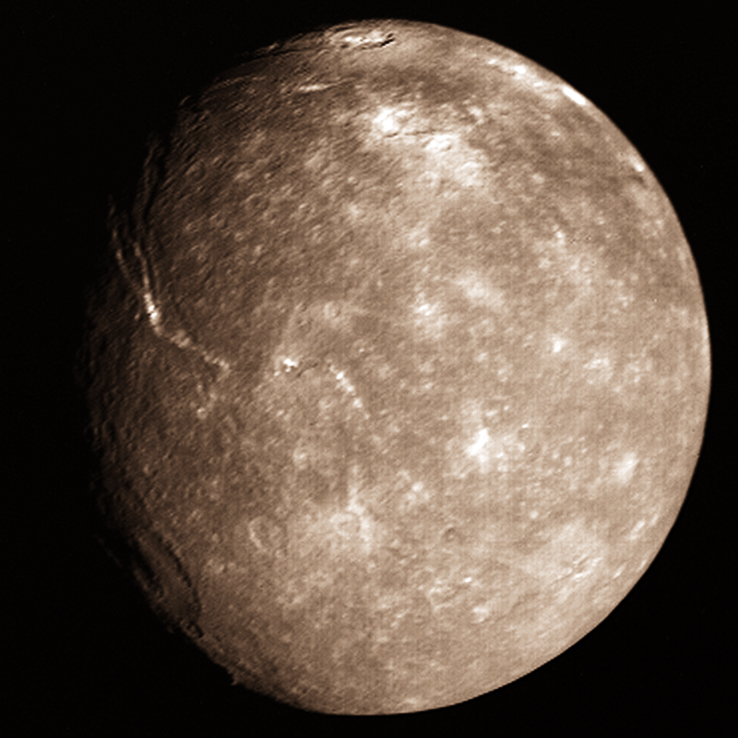

Оберон
ОберонЗа Уран са известни 27 естествени спътника. Първите два — Титания и Оберон са открити от Уилям Хершел на 11 януари 1787 г. Ариел и Умбриел са открити от Уилям Ласел през 1851 г. Имената са предложени през 1852 г. от сина на Уилям Хершел — Джон Хершел. През 1948 г. Герард Кайпер открива Миранда.
Титания е най-големият естествен спътник на Уран. Оберон е най-външният от големите спътници на Уран.
Още информация за Луните на Уран
Титания
Оберон